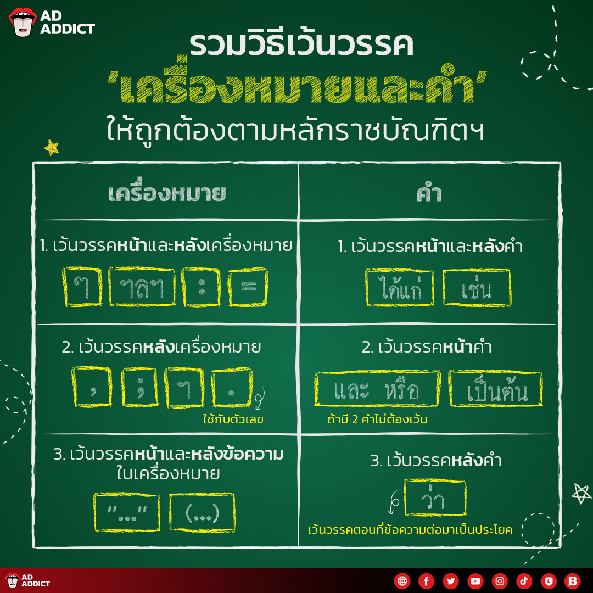

การเว้นวรรค

การเว้นวรรคไทยใช้เว้นวรรคใหญ่(2 เคาะ) เมื่อจบประโยคหรือเปลี่ยนเรื่องและเว้นวรรคเล็ก(1 เคาะ) เพื่อคั่นคำในประโยค เช่น ชื่อ-นามสกุล หรือหน้าและหลังเครื่องหมายบางชนิด(ๆ,ฯลฯ)

การเว้นวรรคไทยใช้เว้นวรรคใหญ่(2 เคาะ) เมื่อจบประโยคหรือเปลี่ยนเรื่องและเว้นวรรคเล็ก(1 เคาะ) เพื่อคั่นคำในประโยค เช่น ชื่อ-นามสกุล หรือหน้าและหลังเครื่องหมายบางชนิด(ๆ,ฯลฯ)